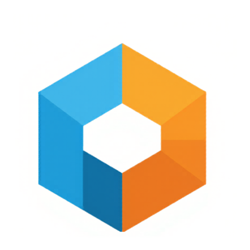

F'" alt="Forma">FORMA INTERIML'agence place des ouvriers intérimaires sur les chantiers.
Ces trois apps calculent la marge, préparent la facturation et suivent les véhicules.
Même si tu débarques dans le métier, tout est expliqué : choisis une app, suis son process pas à pas, et lance-la quand tu es prêt.
Forma Interim est une agence d'intérim BTP : elle met des ouvriers (les intérimaires) à disposition d'entreprises de construction (les clients : MGB, JDS, ACTIBAT, Construction & Patrimoine…) pour travailler sur leurs chantiers.
L'agence paie le salaire de l'ouvrier (+ les charges sociales), et facture le client plus cher — via un multiplicateur appelé le coef. La différence couvre les charges et dégage la marge de l'agence.
Avant la mission : le Calculateur dit si elle est rentable. À la fin du mois : la Facturation transforme les heures travaillées en paies et en factures. En continu : le Suivi véhicules contrôle les coûts de transport.
Un client demande un ouvrier ? Avant de dire oui, on vérifie qu'on gagne de l'argent : le calculateur applique toutes les règles de paie 2026 et affiche la marge, par mission ou par équipe entière.
Voir le process →Les chantiers renvoient des relevés d'heures papier. Cette app les transforme en deux chiffres par chantier : combien payer chaque ouvrier, et combien facturer au client.
Voir le process →L'agence loue des camionnettes pour véhiculer les ouvriers sur les chantiers. Cette app tient le registre : quel véhicule, pour qui, combien de jours, combien ça coûte au total.
Voir le process →Réponds à la question la plus importante de l'agence avant d'accepter une mission : « est-ce qu'on gagne de l'argent sur ce placement ? »
Quand on place un ouvrier chez un client, l'agence lui verse un salaire et paie en plus des charges patronales (les cotisations sociales à la charge de l'agence, ~44,56 % du brut), des congés payés (10 %) et une indemnité de fin de mission (10 %). En face, le client paie le taux horaire × le coef (un multiplicateur négocié, ex. ×1,9). La marge, c'est ce qui reste à l'agence une fois tout payé. Ce calcul est trop complexe pour être fait de tête — le calculateur l'applique au centime, règles 2026 incluses (réduction de charges RGDU, SMIC à 12,31 €/h).
Onglet Calcul : saisis le coef du client, le taux horaire de l'ouvrier, les heures prévues et les primes éventuelles — panier (indemnité repas de chantier), trajet (temps de route indemnisé), transport (frais de déplacement domicile–chantier).
Section Équipe : une ligne par intérimaire — nom, client, chantier, taux €/h et heures propres à chacun. Les heures se ventilent toutes seules : 35 h normales, puis +25 % jusqu'à 43 h, puis +50 % (ex. 45 h = 35 + 8 + 2).
Pour chaque ouvrier tu vois : TF (total facturé = ce que paiera le client), salaire brut, MB (marge brute en euros) et %MB (marge en pourcentage), plus le net versé à l'ouvrier.
🔗 Partager crée un lien court à envoyer par mail / WhatsApp : le collègue ouvre le lien et reçoit toute l'équipe (ses clients et coefs inclus). Aussi : 🖨 impression A4 et 📊 export Excel.
Mission validée, le mois commence ? 📤 Facturation mensuelle envoie l'équipe dans l'app de facturation, groupée par client/chantier, avec le net réel de chaque ouvrier : son net de la semaine ÷ 5 jours = son tarif net par jour (primes comprises), le format qu'utilise l'app Facturation.
| Intérimaire | Taux | Heures | MB | % |
|---|---|---|---|---|
| GAGE Mickael | 13,50 | 39 | 145,00 € | 24% |
| DIALLO Abdoul | 12,80 | 45 | 167,80 € | 26% |
Transforme les relevés d'heures papier en deux chiffres par chantier : combien payer chaque ouvrier, combien facturer au client. C'est ici qu'on utilise LlamaParse pour lire les scans.
Chaque semaine, les chefs de chantier remplissent à la main un relevé d'heures : qui a travaillé, quels jours, combien d'heures. Ces feuilles arrivent scannées, souvent mal écrites. À la fin du mois, il faut pourtant en sortir la paie exacte de chaque ouvrier et la facture exacte de chaque client. Le process ci-dessous automatise la chaîne : scan → texte (OCR) → CSV → tableaux calculés. Règle d'or : on ne devine jamais un nom — chaque nom du relevé est comparé à la liste officielle des intérimaires tenue par l'agence (le document de référence), parce qu'une paie sur un nom mal orthographié, c'est une paie perdue.
Le relevé scanné est une image : l'ordinateur ne sait pas la lire. LlamaParse fait l'OCR (reconnaissance de texte) et ressort un texte propre et exploitable.
Claude, c'est l'assistant IA de l'agence (sur claude.ai). Colle-lui le texte sorti de LlamaParse et demande le CSV au format facturation : il produit un CSV multi-blocs (1 bloc = 1 chantier), convertit les heures en jours (plus de 5 h = 1 jour, 5 h ou moins = ½ journée) et vérifie chaque nom dans la liste officielle des intérimaires de l'agence.
Bouton 📎 Importer CSV : un tableau par chantier se crée automatiquement pour le mois, avec les jours de chaque ouvrier déjà remplis semaine par semaine.
Vérifie les jours (modifiables d'un clic), le tarif net de chaque ouvrier (le carnet retient les tarifs d'un mois sur l'autre) et le coef du client. Le facturé se calcule tout seul : net × coef (ex. ACTIBAT/JDS ×1,82, MGB ×1,78).
💰 Paie hebdo : combien donner à chaque ouvrier, semaine par semaine (les paiements remis en main propre chaque semaine). 🖨️ Fiche du mois : tous les chantiers, classés par entreprise, sur une seule page A4. Export Excel disponible.
Le client Construction & Patrimoine fonctionne autrement : à l'heure (pas à la journée), et sur ses relevés la couleur de chaque case indique le chantier du jour (rouge = St Roch, vert = Arles…). Pour lui : onglet ⏱️ V2 heures.
| Intérimaire | S23 | S24 | Tot. | Salaire | Facturé |
|---|---|---|---|---|---|
| GAGE Mickael | 5 | 5 | 10 | 1 600 € | 2 848 € |
| MENDES Sergio | 5 | 4,5 | 9,5 | 1 900 € | 3 382 € |
| DUARTE Adilson | 5 | 5 | 10 | 1 600 € | 2 848 € |
| TOTAL | 29,5 | 5 100 € | 9 078 € |
cloud.llamaindex.ai transforme un PDF de relevé scanné en texte propre. C'est l'étape de départ de tout import de relevé — garde le lien sous la main.
Ouvrir LlamaParse ↗Le registre exact des locations de véhicules : quel véhicule, pour quel client et quel chantier, combien de jours, combien ça coûte — et qui suit le dossier.
Les chantiers sont rarement à côté de l'agence : Forma loue des camionnettes chez des loueurs partenaires (Olympic Location, 6D AuPrestige…) pour que les ouvriers puissent s'y rendre. Chaque location génère une facture + des frais annexes (essence, kilomètres au-delà du forfait, réparations, amendes…). Sans suivi, ces coûts partent dans tous les sens. Cette app tient le registre — 1 ligne = 1 véhicule loué sur une période — et rattache chaque coût à un client, un chantier et un rapporteur d'affaires (le commercial responsable du client).
Dans le mois, les loueurs envoient leurs factures PDF (Olympic Location, 6D AuPrestige…). Rassemble-les : ce sont elles qui contiennent modèle, immatriculation, dates et montants.
Donne les factures à Claude, l'assistant IA de l'agence (le même que pour la facturation, sur claude.ai) : il les lit et produit un CSV au bon format — un fichier tableau avec séparateur « ; » et décimales à virgule. Une ligne par véhicule loué.
Bouton 📂 Importer CSV : les lignes arrivent dans le tableau. Le rapporteur d'affaires se remplit tout seul à partir du client : MGB/JDS/ACTIBAT → Aristide · HD/Vilaplano/Lobo → Rui · Fereira/Grow/Acobat → Bruno · Patrimoine → Pedro.
Nb jours = date fin − date début · TTC = HT × 1,20 (TVA 20 %) · Total frais = essence + éco-contribution/nettoyage + km au-delà du forfait 4 500 km + réparations + PV · TOTAL = TTC + frais. Coche « facture reçue » quand elle arrive.
Groupe l'affichage par rapporteur, client, chantier ou loueur (avec sous-totaux). En fin de mois, 📦 archive le tableau (photo restaurable à tout moment) et repars sur un mois propre. Ré-export CSV possible à tout moment.
| Client | Loueur | Jrs | TTC | Frais | TOTAL |
|---|---|---|---|---|---|
| MGB | Olympic | 22 | 620 € | 85 € | 705 € |
| JDS | 6D | 15 | 410 € | 40 € | 450 € |
| ACTIBAT | Olympic | 30 | 560 € | 0 € | 560 € |
| TOTAL | 67 | 1 590 € | 125 € | 1 715 € |